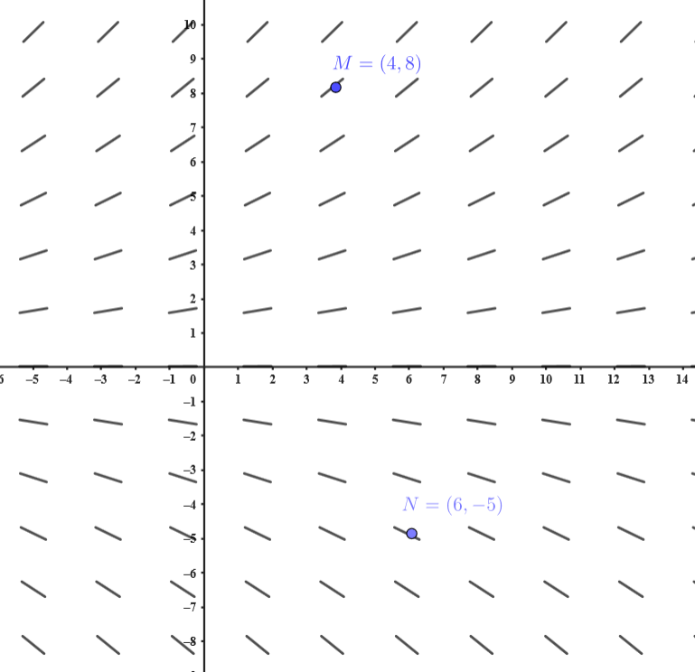
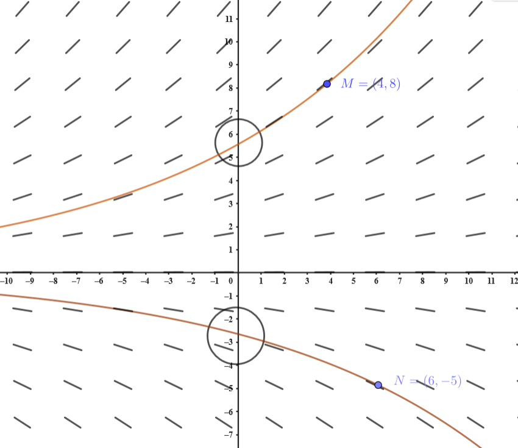

A seguir, apresentaremos um exemplo para ilustrar quais informações cada elemento de uma EDO de primeira ordem pode fornecer. Muitas vezes, é possível identificar diversas propriedades das soluções apenas observando a forma da equação, sem a necessidade de resolvê-la explicitamente.
Vamos imaginar juntos que a equação \(\;y\,'=0.1\,y\;\) descreve o rendimento de um dinheiro que você investiu inicialmente, \(y_0\), em um fundo de investimento. Aqui, \(y\) representa o saldo atual. Mesmo sem saber muito sobre finanças, já conseguimos entender algo importante: o aumento do saldo \(y\,'\) em qualquer momento é proporcional ao saldo naquele instante. Isso significa que quanto mais dinheiro você investir no início, mais rápido ele crescerá. Legal, né?
Agora, vamos explorar os elementos dessa equação diferencial de forma simples:
- O que é \(y(t)\)?
\(y(t)\) representa o saldo total no fundo de investimento ao longo do tempo \(t\) (geralmente em anos). A condição inicial \(y(0)=y_0\) é o valor que você investiu no início. Vamos supor que \(y_0>0\), ou seja, começamos com um saldo positivo (ninguém quer falar de dívidas agora, certo?). - O que é \(y\,'(t)\)?
\(y\,'(t)\) é a taxa de crescimento do saldo, ou seja, quanto o seu investimento está rendendo naquele momento. Esse rendimento depende diretamente do saldo atual. Mais saldo = mais rendimento. - Por que o saldo \(y\) sempre cresce?
O saldo aumenta com o tempo porque o rendimento \(y\,'(t)\) é sempre positivo enquanto \(y>0\). Isso é garantido pela equação \(y\,'(t)=0.1\,y>0\), se \(y>0\). Então, o gráfico da função \(y(t)\) é sempre crescente. Quanto mais tempo passa, maior fica o saldo. - O que significa a constante \(0.1\)?
Essa constante indica que o saldo cresce a uma taxa contínua de \(10\%\) ao ano. Isso é crescimento exponencial! Ou seja, o saldo não aumenta de forma linear, mas cada vez mais rápido à medida que o tempo passa.
Agora, uma coisa importante: a equação \(y\,'=0.1\,y\) não pode ser resolvida apenas "integrando diretamente", porque o lado direito também depende de \(y\). Mas não se preocupe! Vamos aprender a resolver essas equações passo a passo. Por enquanto, nosso objetivo é entender o que a equação nos diz, mesmo sem resolvê-la.
O que a equação \(y\,'=0.1\,y\) nos diz?
Ela nos diz que:
Se \(y>0\), então \(y\,'\) é positivo. Isso significa que o saldo está aumentando nesse instante. A tangente ao gráfico da solução \(y(t)\) terá inclinação positiva.
Se \(y<0\), então \(y\,'\) será negativo. Isso significa que o saldo está diminuindo naquele momento. E, bom, se começar com dívida, a coisa só piora!!
Vamos explorar isso com um exemplo visual!
No gráfico abaixo, desenhamos pequenos segmentos em vários pontos \((a,b)\) do plano cartesiano. Cada segmento tem uma inclinação igual a \(y\,'(a)\), que é dada por \(y\,'(a)=0.1b\). Veja:
No ponto \(M=(4,8)\), o saldo é \(8\). A derivada é \(y\,'(4)=0.1 \cdot 8 = 0.8 > 0\). Isso significa que, nesse ponto, o saldo está aumentando. Você está ganhando dinheiro!
Agora, no ponto \(N=(6,−5)\), o saldo é \(−5\). A derivada é \(y\,'(6)= 0.1 \cdot (-5) = -0.5 < 0\). Nesse caso, o saldo está diminuindo, porque começou negativo. Isso é o equivalente a estar mais endividado do que começou.
Se você observar os segmentos no gráfico, verá que:
Onde o saldo é positivo \(y>0\), os segmentos sobem e o saldo aumenta.
Onde o saldo é negativo \(y<0\), os segmentos descem e o saldo diminui.

Agora, veja as soluções no gráfico!
Além dos segmentos, adicionamos as soluções no gráfico abaixo. Veja como o segmento é tangente à curva solução. Isso acontece porque o segmento representa a derivada da função naquele ponto!
A solução que passa por \(M\) é crescente, pois começou com saldo positivo, e a derivada portanto é positiva. Já a solução que passa por \(N\) é decrescente, pois começou com saldo negativo. Isso reflete a diferença entre investir dinheiro poupado (saldo positivo) e pedir um empréstimo que não consegue pagar (saldo negativo). Ambos crescem exponencialmente, mas em direções opostas: um traz alegria e o outro, ansiedade!

Viu como você consegue dizer muita coisa sem resolver a EDO? Esses gráficos se chamam campo de direções da EDO \(y'=f(x,y).\) São muito úteis para "unir" os pontos dos segmentos e ter uma ideia de como serão as curvas integrais das soluções sem saber a cara delas.
Com essa visão geral, você já tem as ferramentas para interpretar o que uma equação diferencial nos diz sobre o problema, mesmo sem resolvê-la. Em breve, aprenderemos como encontrar as soluções matemáticas dessas equações.
Em inglês se chama slope field (campo de inclinações). Em dimensão dois ou mais, chamaremos de campo vetorial. Isso é devido a que as soluções são parametrizações de curvas. E a derivada de uma curva é um vetor. Se ainda está curioso, pergunte seu professor!!
 Identificando o comportamento local
Identificando o comportamento local Relacionando pontos e inclinações
Relacionando pontos e inclinações Explorando curvas integrais
Explorando curvas integrais